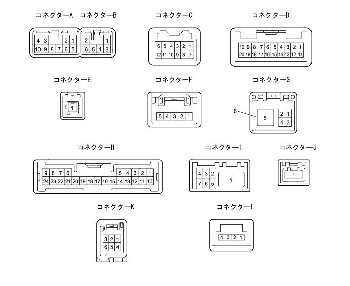

G-BOOK System Terminals of ECU |

| Terminal No. (Terminal Symbol) | Input/Output | Item | Measurement Condition | Specified Condition | Trouble symptom if out of standard O: When open circuit S: When shorted to body |
|---|---|---|---|---|---|
| H12 (TSW-) ←→ Body ground | - | Resistance | Always | Below 1 Ω |
|
| H17 (MACC) ←→ Body ground | Output | Voltage | ACC ON | 5 V |
|
| H18 (SGND) ←→ Body ground | - | Resistance | Always | Below 1 Ω |
|
| H19(MIC+) ←→ H20(MIC-) | Input | Waveform | During voice input | A waveform synchronized with the sound is output |
|
| H20 (MIC-) ←→ Body ground | - | Resistance | Always | Below 1 Ω |
|